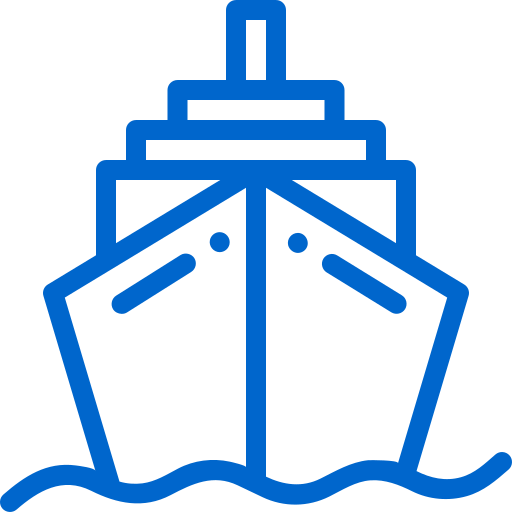
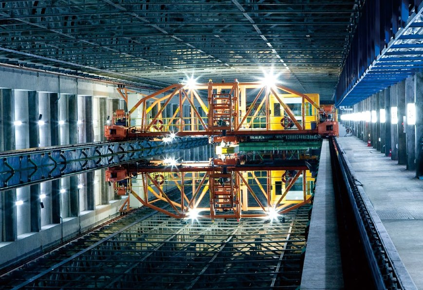
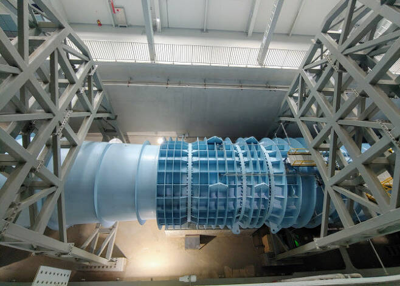
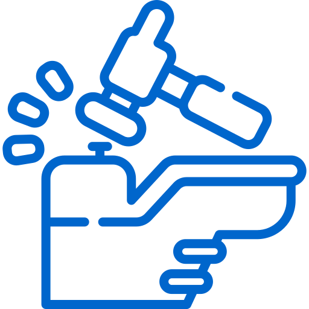
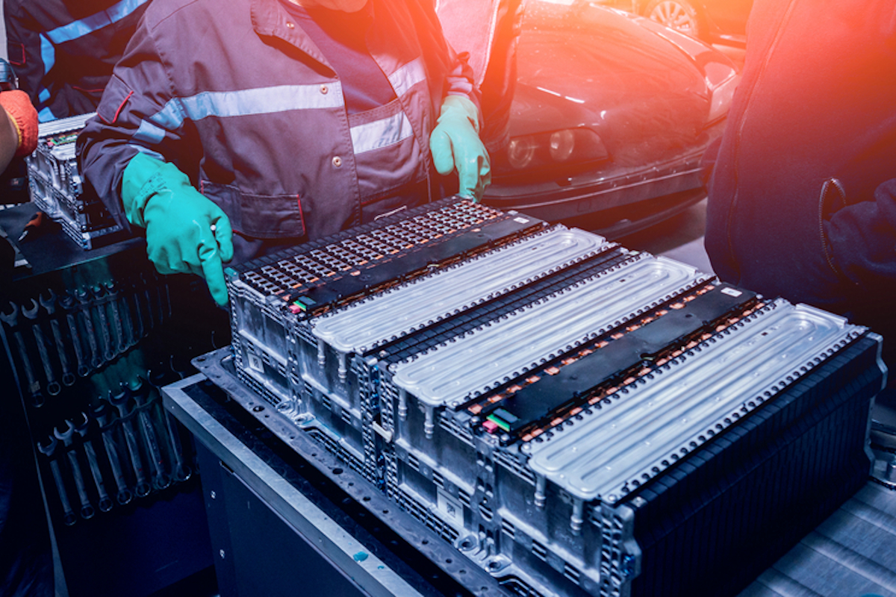
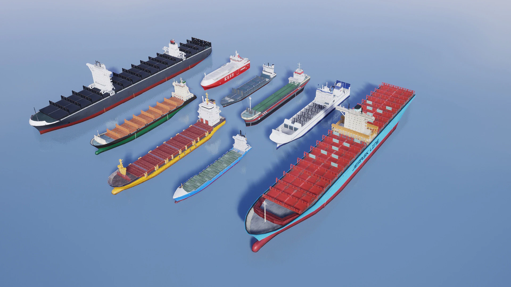
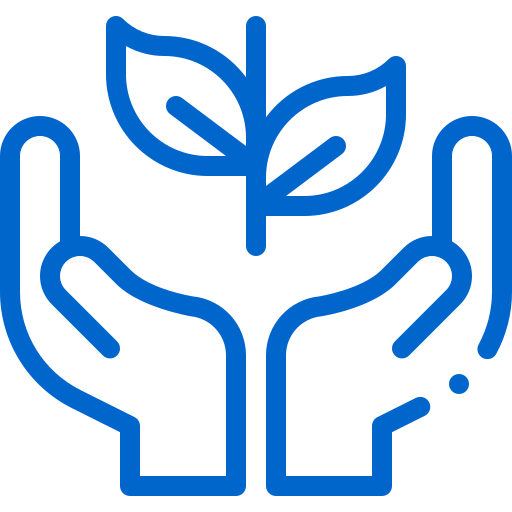
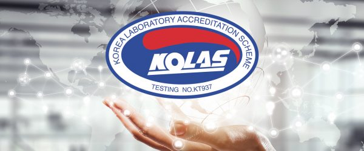

home>기술개발>연구소 소개
연구소 소개
- 조선해양연구소로 하나된 기술력
- 1984년 기본설계부의 개발팀으로 출발한 연구소는 선박해양연구소, 생산기술연구소, 산업기술연구소, 중앙연구소 등의 명칭을 거쳐 2022년 조선해양연구소로 기능을 통합하여 운영하고 있습니다
-
DEVELOPED
-
2022

선박해양연구
-

- 예인수조
- 대전에 위치한 세계 최대 규모 상업용 예인수조(길이 400m, 폭 14m, 깊이 7m)를 기반으로 선형·추진기의 성능 및 선박 운동·조종 안정성을 확보하고 연료 절감장치를 개발 하는 등 선박의 성능향상 및 선종 개발에 주력하고 있습니다.
- 예인수조는 선형유도모터 구동으로 저소음·저진동이 특징인 고속선용 예인전차와 일반선용 예인전차, 대진폭 제어 조종시험대차와 실제 해상의 파도를 모사한 40분할 조파장치를 갖추고 있습니다.
-

- 공동수조
- 세계 최고 조선소의 위상에 부합하는 초일류 기술 확보를 위해 1996년 자체기술로 국내 최대 규모의 저소음 공동수조를 완공했습니다.
- 공동수조는 28m/s의 최고 유속으로 고속 모형시험이 가능한 제 1시험부와 650톤의 수조수가 최고 유속 12m/s로 순환하며 최대 10미터급의 모형선을 설치할 수 있는 제 2시험부로 구성됩니다.

생산기술연구
-

- Battery System
- 친환경 선박 기술 선도를 위해 칠서에 국내 최초로 선박용 대용량 배터리시스템 TEST-BED를 구축하였습니다. 최대 600kW/360kWh로 시험 가능토록 설계되었습니다.
- 또한, 배관 내부를 주행하며 용접 후 배관을 청소·검사 할 수 있는 장비를 개발하였으며 세계 최초로 배관 내부 방사선 검사를 수행하여 방사선 검사 시간과 피폭시간을 대폭 단축시켰습니다.
-

- 모형 제작
- 모형시험으로 실제 선박성능을 정확히 추정하려면 실제 선박 및 추진기를 축소한 정밀모형이 필요합니다. 10미터 길이 모형선과 최대 직경 0.3미터의 추진기를 정밀하고 신속하게 가공합니다.
- 대용량 리튬이온 배터리와 충방전 전력설비의 안전성과 효율성을 지속적으로 개선 검증하고, 다양한 선종에서 에너지 효율을 향상시킬 수 있는 EMS(에너지관리시스템) 알고리즘 기술 개발에 매진하고 있습니다.

에너지플랜트
-

- KDLAS 시공승인
- KOLAS(Korea Laboratory Accreditation Scheme)는1992년 8월 창설된 한국인정기구로 국가기술표준원에서 운영하고 있으며, ISO/IEC 17025의 규정에 따라 시험기관을 평가하여 인정하는 기관입니다.
- KOLAS로부터 인정받은 공인기관에서 생산한 시험결과는 어떠한 재시험 없이 국제시험기관인정협력체 로 부터 해당 공인성적서가 인정됨을 의미합니다.